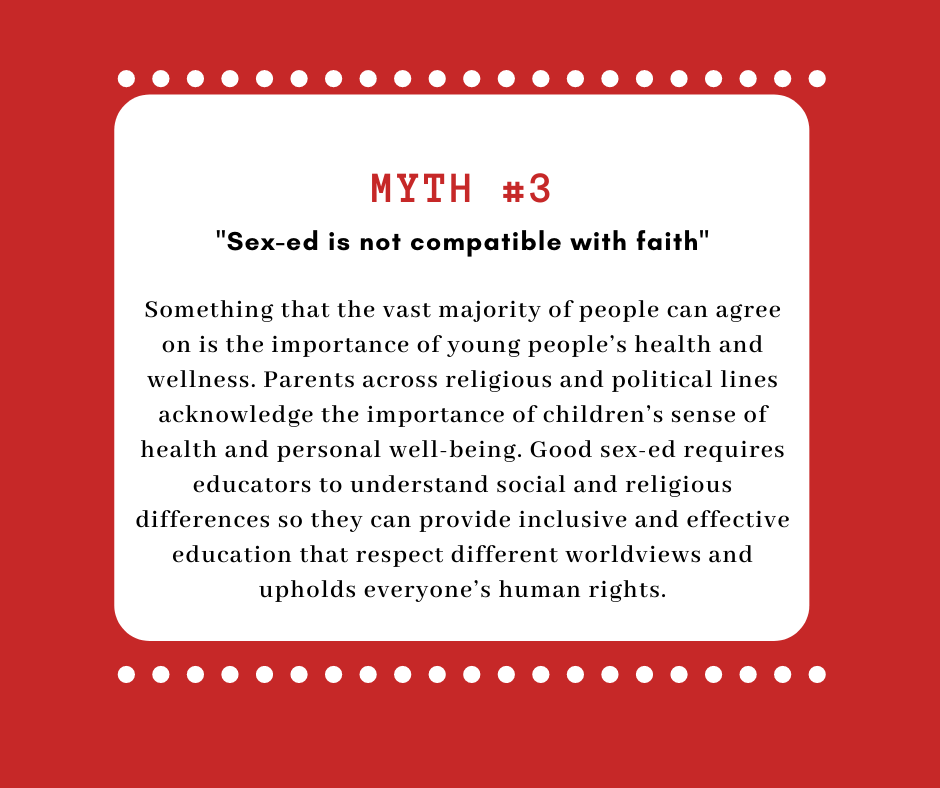

Sex Education
Young people can also learn to appreciate and recognize their own sex: bodies just as good, beautiful and special as other God’s perfect creations. Moreover, it delivers confidence to them to value themselves and others. Sex education helps them understand the place of sexuality in human life and loving other people. They will learn to enjoy their sexuality, behave responsibly within their sexual and personal relationships. Youngsters are usually very curious to know all new things that came up to them especially abstract things such as sex. Despite that, sex education plays a major role in addressing concerns and correcting the misunderstandings that the youngsters may have gained from sources such as the media and their peers. In addition, they will learn to make decisions that respect themselves and others by taking account the possible consequences. For instance, youngsters will be more matured, responsible and social ills can also be reduced. Furthermore, research had shown that children that are subjected to sex education are more apparent to practice safer sex. Some people might say that sex education could influence premarital marriage, leading to the increment of unwanted pregnancies. Conversely, a survey done in 1987 had shown that girls who were not educated about menstruation and sexual activity were much more likely to become pregnant during their teen years. There was also a statement from the Government Review of National and International Research in London that identified high school sex education as being effective in reducing teenage pregnancies. Based on the facts given, it clearly proves that sex education does not lead youngsters to social ills such as unwanted pregnancies. However, a slight problem might arise since sex education might be a new subject or program in most high schools. Therefore, the program should be planned carefully in conjunction with those who will participate and the parents. The program instructors also ought to receive adequate training and equipped with the required skills and knowledge to support the personal and social development of young people through sex education.

Sex education is never the most pleasant of the conversations for an adult and child to have. Yet, it is an essential one that many feel should happen in a responsible and safe environment. Due to increasing incidences of HIV/AIDS, RTIs/STIs and teenage pregnancies, there is a rising need to impart sex education. Parents and counsellors in Delhi argue that banning sex education is not a solution and will prove disadvantageous instead, given the exposure kids have to the internet. There is an ocean of distorted information available at the click of a button on the internet. It hardly throws light on issues like gender equality, marital sexual relationships or even violence or abuse on sexual grounds.That is why schools should take up these classes starting from as early as class VI, so that the students are comfortable approaching their teachers before turning to unreliable sources of information online.
The sole aim of such an education would be to teach children to establish and accept the role and responsibility of their own gender by acquiring the knowledge of sex. Understanding the differences and similarities between two genders; in terms of body and-mind will set up a foundation for the future development in their acquaintance with friends and lovers and their interpersonal relationship. It will also help to develop emotionally stable children and adolescents who feel sufficiently secure and adequate to make decisions regarding their conduct without being carried away by their emotions.